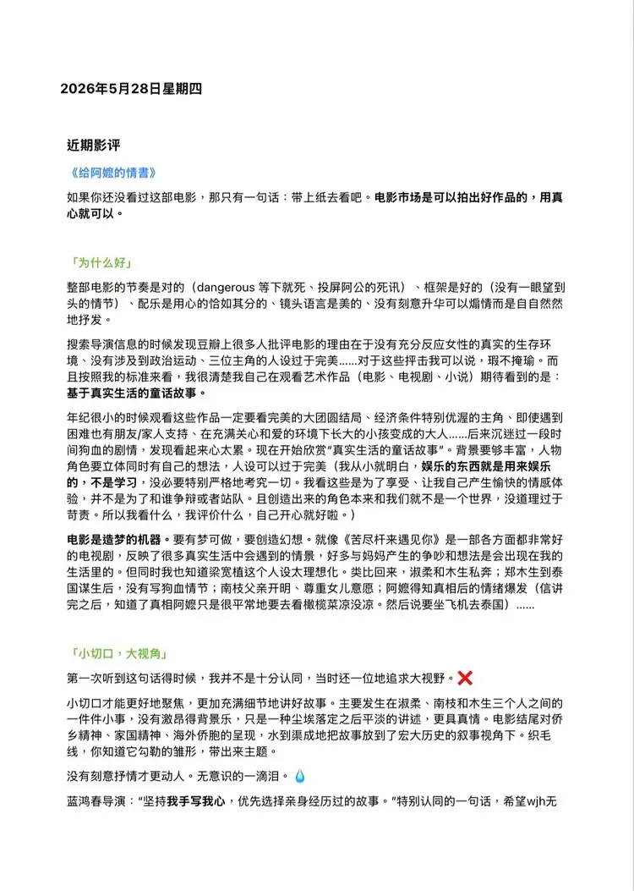
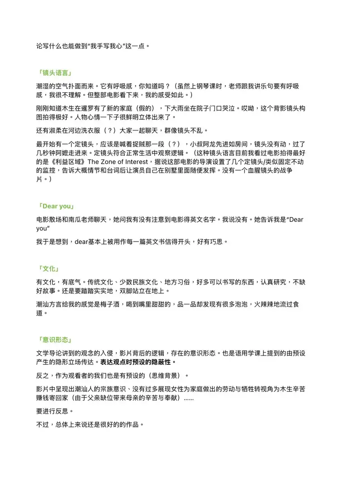
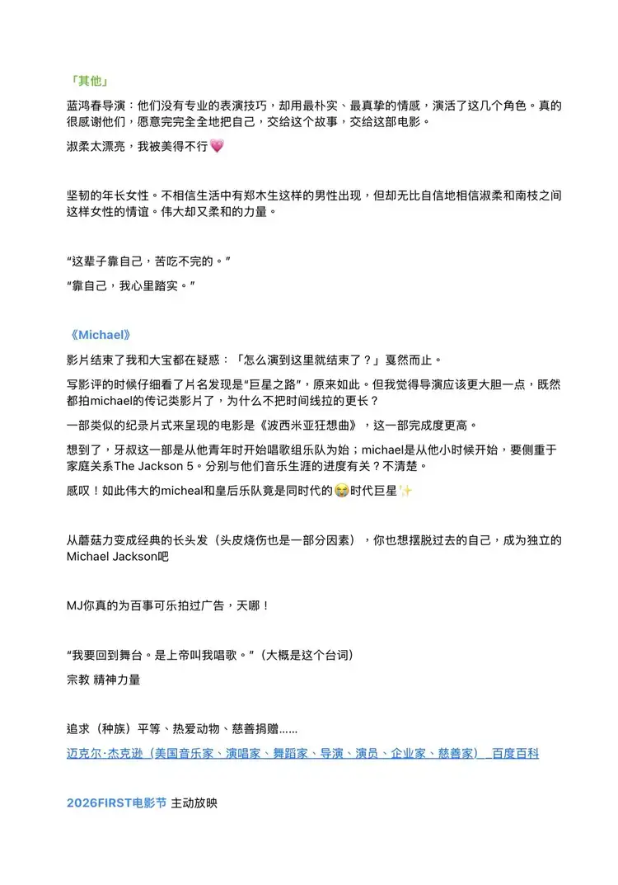

保留原话与语气，修正错字与分段。英文为网站译文。文中的判断与疑问保留写作当时的状态。Original voice retained, with light typo and paragraph corrections. The English is a website translation; judgements and questions reflect the time of writing.
小切口才能更好地聚焦，更加充满细节地讲好故事。主要发生在淑柔、南枝和木生三个人之间的一件件小事，没有激昂的背景乐，只是一种尘埃落定之后平淡的讲述，更具真情。A small starting point makes it easier to focus and tell a story with detail. It is mainly made of small things happening between Shurou, Nanzhi and Musheng. There is no soaring background music, just a quiet telling after the dust has settled. It feels more sincere.
没有刻意抒情才更动人。无意识的一滴泪。It is more moving when it does not deliberately try to be lyrical. A tear you did not notice coming.
潮湿的空气扑面而来。它有呼吸感，你知道吗？（虽然上钢琴课时，老师讲乐句要有呼吸感，我很不理解。但整部电影看下来，我的感受如此。）The humid air comes right at you. It breathes, you know? (When my piano teacher said a musical phrase needed to breathe, I didn’t really understand. But that is how the whole film felt to me.)
刚刚知道木生在暹罗有了新的家庭（假的），下大雨坐在院子门口哭泣。哎呦，这个背影镜头构图拍得好。人物心情一下子很鲜明立体出来了。Just after hearing that Musheng has a new family in Siam (which is false), she sits crying at the entrance to the courtyard in heavy rain. Oh, that shot from behind is so well composed. Her feelings suddenly become vivid and tangible.
有文化，有底气。传统文化、少数民族文化、地方习俗，好多可以书写的东西，认真研究，不缺好故事。还是要踏踏实实地，双脚站立在地上。There is culture, and confidence in it. Traditional cultures, minority cultures, local customs—there is so much to write about. Study them seriously and there will be no shortage of good stories. Keep both feet on the ground.
潮汕方言给我的感觉是梅子酒，喝到嘴里甜甜的，品一品却发现有很多泡泡，火辣辣地流过食道。The Chaoshan dialect feels like plum wine to me: sweet when it enters your mouth, then, as you taste it, full of bubbles, burning as it goes down.
反之，作为观看者的我们也是有预设的。（思维背景）Conversely, we as viewers have our own presuppositions too. (The background to our thinking.)
要进行反思。
不过，总体上来说还是很好的作品。That calls for reflection.
Still, overall, it is a very good work.
查看完整中文原稿View the complete Chinese manuscript ↗


